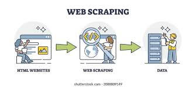
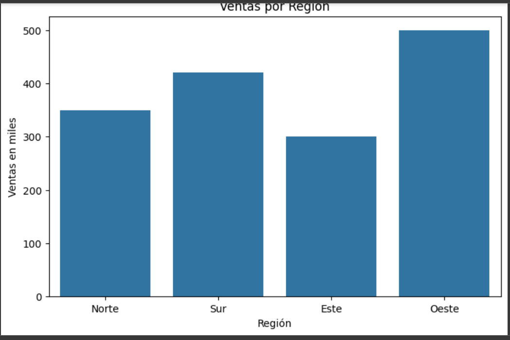
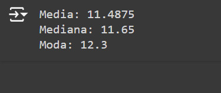
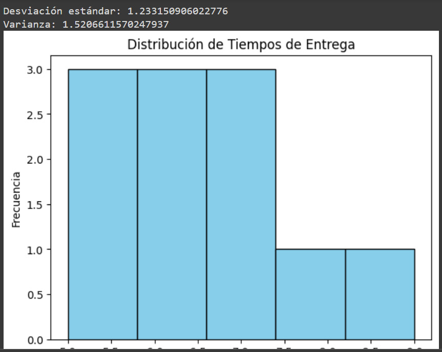

El Webscraping es una técnica utilizada para extraer grandes cantidades de datos de sitios web, que posteriormente pueden ser utilizados para análisis o almacenamiento en bases de datos.
Problema a resolver: Obtención de datos de páginas web para analizar patrones de compra en línea.
Las técnicas de visualización permiten representar datos de manera gráfica, facilitando su análisis y la identificación de tendencias.
Problema a resolver: Visualización de datos sobre ventas por región para optimizar la estrategia de ventas.
Las medidas de tendencia central como la media, la mediana y la moda, son fundamentales para describir conjuntos de datos.
Problema a resolver: Análisis de los precios promedio de productos electrónicos.
Las medidas de dispersión, como la varianza y la desviación estándar, permiten entender la distribución de los datos.
Problema a resolver: Determinar la variabilidad en los tiempos de entrega de un servicio de mensajería.
En conclusión, las técnicas presentadas permiten realizar análisis completos sobre diferentes tipos de datos, optimizando decisiones empresariales basadas en información concreta.